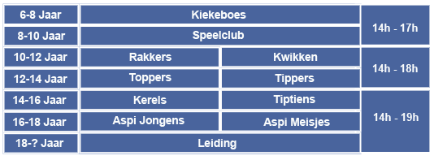

Gouden zondagske
Dag Chiro liefhebber,
Misschien heb je het al horen vallen of is het totaal nieuw, maar eindelijk is het zo ver!!! We zijn begonnen aan de verkoop van ons eigen bier. Wij presenteren jullie het Gouden zondagske, een zoet biertje met een zachte tint van honing en een percentage van 7,7%.
Ben je een bierfanaat die graag eens iets nieuws probeert of wil je gewoon onze chiro steunen? Klik dan hier om je bestelling te plaatsen.

Wie zijn wij?
De Chiro is een organisatie door, maar vooral voor jongeren, gelegen in de Broekveldstraat 33, tegenover de Carrefour/GB van Herent. Het is een plaats waar de kinderen zich kunnen uitleven, spelen en ravotten, knutselen en origineel zijn. Maar het is tevens een plaats waar groepsgeest, samenhorigheid en eendracht primeren. Voor elke leeftijdscategorie is er een groep voorzien, er is dus voor ieder wat wils.
Voor de allerjongsten onder ons zijn er de Kiekeboes. Deze bengels tussen zes en acht jaar zijn elke zondag tussen twee en vijf welkom op de Chiro. Als je tussen acht en tien jaar oud bent, kan je terecht bij de Speelclub. Bij de Kiekeboes en Speelclub zitten alle leden samen. Hogere groepen zijn niet meer gemengd. Daarmee zijn we dan aanbeland bij de Rakwis. Jongens tussen tien en twaalf jaar horen bij de Rakkers thuis, meisjes van deze leeftijd horen bij de Kwikken. Zo is er een groep voor iedereen tot en met 18, na twee jaar aspi kan je leiding worden.
Lidgeld: Het lidgeld bedraagt 35 euro per lid per jaar.
Klik hier voor meer info of om je in te schrijven
Tweedehands Chiro-kleren
We weten allemaal dat de officiële Chirokledij zeer duur is, daarom willen wij vragen om Chirokledij die te klein is geworden en waar jullie niets meer mee doen aan ons te geven. Wij zouden deze dan voor een mooie prijs doorverkopen op de Chiro. De winst die we hierop maken geven we aan een vrijwilligersorganisatie. Ouders die kledij komen afgeven mogen mee stemmen voor welke organisatie de winst gaat. Maar dit alles hangt natuurlijk af van de input van jullie oude kleren. De site van waar de kledij vandaan komt is de banier.
Moetjeslezen
De Moetjeslezen is het boekje voor alle groepen, dit kan je online of op papier krijgen.
Wil jij de Moetjeslezen digitaal of op papier ontvangen? Schrijf je dan hier in